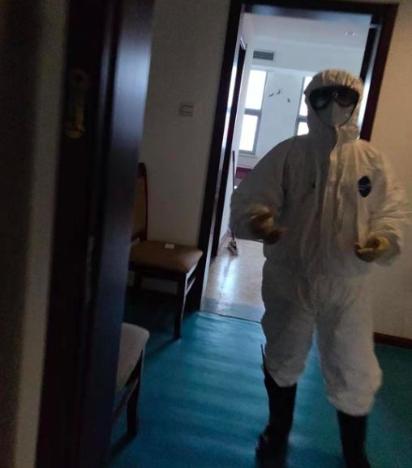

「 隔离日记 」 20200131
原文链接 备份链接 播放音乐 | 阅读效果更佳 感谢 | 您对霍超LEGAL的关注、阅读与分享 昨天飞机刚刚落地，手机开机给爸妈报了平安，人们开始涌动，起来从行李架上收拾东西，飞机上的广播突然响起，”乘坐本次航班的旅客 霍超先生，因为您先 …
播放音乐 | 阅读效果更佳
感谢 | 您对霍超LEGAL的关注、阅读与分享
昨天，许多关心和关注我的人看到推送，给予我鼓励和安慰，收到祝福的消息太多，以至于一时让我有些手足无措，没能及时回复还望谅解，在此必须再说一句感谢、感恩、感激。现在我在隔离区域，能跑能跳，身体一切安好，如今按照政府和医疗机构的要求进行科学的隔离，就是对自己负责，对身边人负责，对所有人负责。
我想这次疫情中的大多数人，对于这次新型冠状病毒都有着一个从不知不觉到后知后觉的过程，我是在1月初所了解到武汉地区可能有着类似SARS病毒的消息，但就当做日常的诸多信息洪流之一，转眼就忘却了，直到1月17号的时候，有在日本留学的同学在微信上询问我关于武汉的情况，因为我从那时起开始留意在各种渠道上的武汉新闻。所以当我乘坐有确诊感染患者的飞机上，全程都有佩戴N95口罩，全程也都有遵守丁香园上看到的勤洗手、必要时进行消毒的医嘱，尽人事，听天命，所以在被隔离后到现在也都能一直保持着乐观、积极、阳光的态度。
在此，还要务必感谢，就在隔离楼栋中，那些近在咫尺但却未有谋面的医护人员，他们人手并不多，在春节期间离家工作，奔赴可能的感染区，除了在一般的医疗工作之外，还要穿着如此厚重的防护服，照顾我们的生活所需，几乎无休，十分辛苦。

隔离区的医护人员询问所需，2020年 1月30日

医护人员在在放食物的间隙中靠门休息，2020年 1月31日

每天打开房门领取餐食，2020年 1月31日

如果没有身处其中，依我所浅薄所想，可能这栋房间里，所发生的的事情一如索尔仁尼琴的《癌症楼》里的众生百态大抵相似，但是经过我的观察，在微信群中，同楼的网友们，至今的状态也都远比我想象的欢乐，并没有被“过度卷入”恐慌，除了吐槽和咨询一些在这里生活所遇到的问题，当然最多的问题还是吃….还有就是彼此之间的有爱沟通、鼓励打气，和给同群医护人员们加油助威，当然也因为昨天又陆陆续续多了一些新人，今天这里的网络变得不像初来时那么顺畅…
“ 德贤居 隔离群 ”，为保护个人隐私，聊天截图有做部分处理
“ 德贤居 隔离群 ”，为保护个人隐私，聊天截图有做部分处理

“ 德贤居 隔离群 ”，为保护个人隐私，聊天截图有做部分处理
没错，如果你仔细看，上面聊天的图可以发现，昨天显得十分生硬的“三楼 隔离群”的名字已经改成了“德贤居 隔离群”，感觉在这里的人大家都德贤具备，很有素养…
独处一人，困局一室之内，除了还要在线上继续办公，多出的闲暇之余。我就在听之前收藏的人民大学温铁军教授的各种讲座视频，是不是也去瞎想想隔离过后，的自己和这个世界会是怎样。
温铁军：大城市的城市病，在任何一个问题爆发的时候，都显得如此的不堪一击
过去的20~30十年里，我们许多中国人都希望着从农村到乡镇，从乡镇到城市，从城市到更大的城市，好像越是大型的城市，就越是有着千万般可能、千万般的好，忽视了离开故土所失去的温暖和亲情，同时也忽视了所有的好处和可能性都建立在大城市内部越来越复杂精密协作的体系之中，用脚投票，迫不及待的把手里不多的鸡蛋，一个接一个的紧迫地放进入大城市的篮子之中，但在物质的享受之中，却也往往会忽视乃至枉顾这篮子里所孕育的黑天鹅。
在这次疫情之后，伴随着中国高速铁路网的全面铺开和5G网络的全面普及，中国是否有可能从高速高效高风险的特大城市畸形扩张转而走出一条类似于欧洲“莱茵模式”的城乡经济良性互动之路，在21世纪第2个10年中国的包容性增长之中，让更多的中国人切实的参与到改革红利的利益分配之中……

海边的游民，柬埔寨-西哈努克港，2020年1月29日
当然，如此宏观长远的事情，不是我所应该和能够关心的事情，但时常有这样那样的遐思，就好像自己现在就像隐居在斯里兰卡安心写作的阿瑟·克拉克、身处阳泉娘子关电厂摸鱼看书的刘慈欣…..能站在万米高空、横跨历史千年去看这个世界，精骛八极，心游万仞…..这种感觉总是极好的。
查看 往日
—End—
文 | 霍超
插曲 | 《NEW BOY》- 朴树
封面插图 | 霍超
正文摄影 | 霍超
封底视频 | Every Leica has a Soul
长按二维码
关注 | 公众号

点 在看 留下你的印记
谢谢一路有你＼( ^▽^ )／
Huochao
谢谢支持！
长按二维码向我转账
谢谢支持！
受苹果公司新规定影响，微信 iOS 版的赞赏功能被关闭，可通过二维码转账支持公众号。
原文链接 备份链接 播放音乐 | 阅读效果更佳 感谢 | 您对霍超LEGAL的关注、阅读与分享 昨天飞机刚刚落地，手机开机给爸妈报了平安，人们开始涌动，起来从行李架上收拾东西，飞机上的广播突然响起，”乘坐本次航班的旅客 霍超先生，因为您先 …
原文链接 备份链接 1⁄7 *不为这座城市做点什么，最后，可能这座城市就完了……* 2020年1月30日 @雷锋小杨 坐标：武汉 大家就叫我雷锋小杨吧，我也不想留名。 我是武汉人，做酒店管理工作。我们的酒店在远城区，现在还在营 …
原文链接 备份链接 本文故事来自一名化名为“平安”的武汉大学生，记述了她从返乡、封城，再到过年所经历的种种。这个特殊的春节，焦虑与希望同在，寂静与喧嚣并存。身处「风暴中心」，从慌乱到乐观，她的心理发生了什么样的变化？让我们一起来看看她过去 …
原文链接 备份链接 非常时期，武汉成了全国人民挂念、祈福的城市。封城后，武汉人民的真实生活是什么样？ 正和岛自1月26日起特别推出《叶青：我在武汉疫区的第N天》专栏。叶青是一位定居武汉40年的市民，也是一名学者和官员。接下来的一段时间，他 …
原文链接 备份链接 编者按 这篇约稿来自一名化名为“平安”的武汉大学生，记述了她从返乡、封城，再到过年所经历的种种。这个特殊的春节，绝望与希望同在，寂静与喧嚣并存。身处「风暴中心」，她的心理有什么样的变化？让我们一起来看看她的五日。 “ …